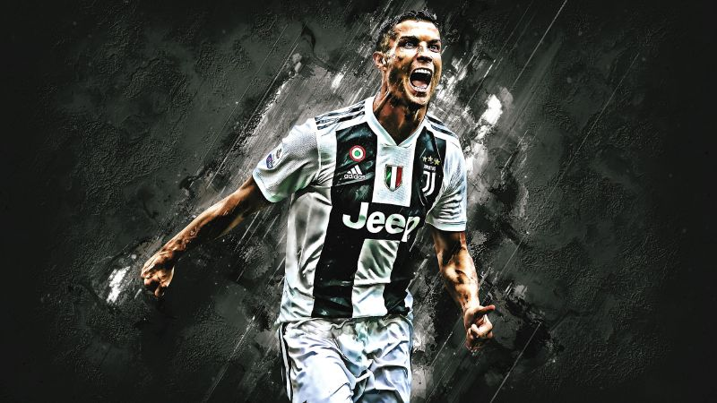

REAL MADRID
Otomotif, 1 Mei 2025
Otomotif, 1 Mei 2025
Yamaha Nmax Turbo adalah skutik 155cc dengan berbagai fitur canggih, termasuk teknologi YECVT, "Turbo" Riding Mode, dan Y-Shift. Skutik ini juga memiliki Full Digital Speedometer, Smart Key System, dan TCS (Traction Control System). Nmax Turbo menawarkan pengalaman berkendara yang lebih dinamis dan nyaman, dengan harga OTR yang bervariasi tergantung pada varian dan wilayah. .
JUVENTUS
Otomotif, 1 Mei 2025
Hadir dengan berbagai sentuhan pembaruan baik dari segi desain, fitur, maupun performa mesin yang sarat akan teknologi canggih, Generasi ketiga AEROX diyakini tidak hanya memberikan pengalaman berkendara yang lebih menyenangkan bagi para penggunanya, tetapi juga akan semakin memperkuat eksistensi Yamaha di segment Sport Scooter yang saat ini memang telah menjadi lifestyle item bagi para anak muda..
About Me

Some text about me in culpa qui officia deserunt mollit anim..
Popular Post
REAL MADRID
JUVENTUS
Follow Me